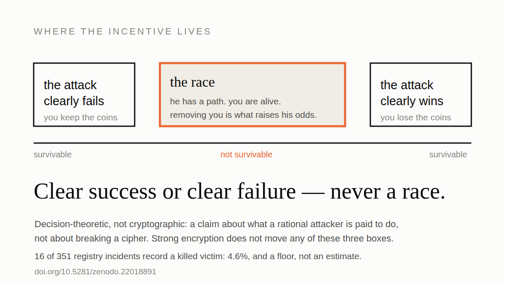
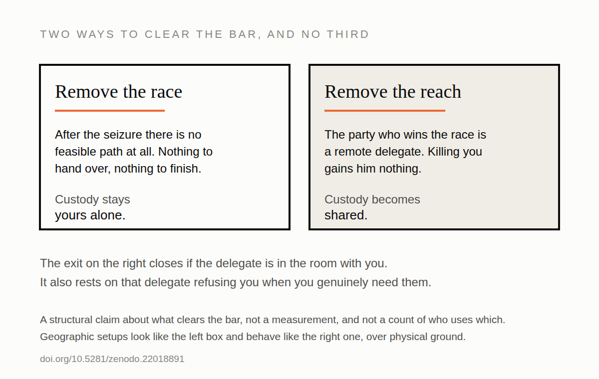

Every self-custody plan has a step where it stops being about software. Someone is in your house. They have your hardware wallet, they have your phone, they have you, and whatever happens next is not going to be settled by your entropy source. What you want from your setup at that point is coercion resistance, and almost nobody selling it has checked what having it would take.
Most designs have an answer for that moment, and the answer is usually some version of they don't get everything. A passphrase they don't have. A key in another city. A time-locked recovery. A seed split three ways. The reassuring part is the same in each: after the encounter, the attacker is still short of the money.
That reassurance is the problem, and it's worth walking through why, because the argument is four steps long and each one is boring on its own.
The thing you cannot do
Start with something that sounds like a technicality.
You can prove you know a secret. Sign a message, produce a preimage, spend from the address. Proving you don't know one, or that no copy of it exists anywhere you can reach, is not a harder version of the same task. There is no protocol for it, because there is nothing to exhibit. You cannot prove you forgot.
Notice how little you'd need to hide for this to hold. An SD card. A password you've memorized for an email account that holds an encrypted file. Four words written in the margin of a book on a shelf. None of that is exotic, and none of it can be ruled out by anyone standing in your living room.
So an attacker who has finished with you is left with a question he cannot close: is there another copy? And he has to answer it the only way that's rational, which is to assume yes.
What that turns a robbery into
Now put the two halves together, and remember what kind of asset this is. Bitcoin is bearer and it is rivalrous: the first valid spend takes everything, and there is no appeal, no chargeback, no insurer to call.
If he leaves with a path to your coins that isn't finished yet, and he releases you, then both of you are pointed at the same funds with the same clock running. He is working through whatever he seized. You are, as far as he can tell, walking to a second backup he never found. Only one of you gets there first.
You are not a victim at that point in any sense he cares about. You're the other runner.
The friendlier the fallback, the worse this gets
A design that fails hard gives the attacker either everything or nothing. A design that degrades gracefully is built to give him a slow, partial, eventual path, which is another way of saying it holds his odds well below certain while leaving the entire balance on the table. That combination is exactly the one that maximises what he gains by removing the competition.
Graceful degradation is a virtue in almost every other system you will ever build. In this one it is the failure mode, and the products that advertise it most warmly are sitting in the worst part of the range.
The arithmetic, which is unfortunately simple
With you alive and free, his expected take is his odds of winning the race, multiplied by the value of the stash. Kill you and his odds go to roughly one. The difference between those two numbers is what he gains. He acts on it when it exceeds what a homicide costs him.
That's the whole calculation. No cryptography appears anywhere in it, which is why "the encryption is strong" is not an answer. The danger is manufactured by the shape of the recovery path, not by its hardness. Coercion resistance lives in the incentive layer, and most threat models don't have a column for it.
And this is not a thought experiment with no outcome data. Sixteen of the 351 incidents in Jameson Lopp's public registry record a victim killed. That's 4.6%, and it's a floor rather than an estimate, because a murder tends to be reported as a murder rather than as a Bitcoin attack, so the ones that never get connected to a wallet never enter the count at all.
'Take me with you' — the Scheherazadian bargain
What follows is a hypothesis about what the incentive structure may lead agents to do. To this day, I have no empirical evidence confirming any particular instance of that chain of events, though by the same information-suppression mechanisms covered in The Denial Spiral, and walked through in Anosognosia, the silence is over-determined.
At any given point in a wrench attack on a Deadly-Race-vulnerable setup, the perpetrator, the victim or both may realize the incentives for the terminal move. In that situation the victim may actually volunteer to go into the attacker's custody, in a twisted Scheherazadian bargain. In the One Thousand and One Nights, the protagonist volunteers for what turns out to be a captivity in order to stop the killing of third parties, then prolongs that captivity night by night, a thousand and one times, to stave off her own, bidding cliffhanger resolutions for her life.
Ferdinand Keller, “Scheherazade und Sultan Schariar” (1880), public domain. She is mid-story and he is listening, which is the whole mechanism: what buys the next morning is that the tale is unfinished. In the book she is pardoned on the thousand and second morning.
In a deadly race, trading the terminal move for an abduction lowers the attacker's judicial liability while still retaining much the same race advantage, and spares the victim's life. Both victim and attacker might thus conclude that the bargain is mutually beneficial, and cooperate with the abduction.
Clear success or clear failure — never a race

Which gives you the test, and it's blunt enough to apply without a maths background.
Coercion resistance means leaving only two kinds of ending. Either the attack plainly fails, meaning what he took reaches nothing and you have nothing transmissible left to give up. Or it plainly succeeds, meaning he gets the coins during the encounter and there is no race afterwards because there's nothing left to race for.
Everything in between is the dangerous band. Not "less secure". Structurally different, because that's the only region where killing you pays.
The second ending costs you the money, and people don't like hearing that it counts as a pass. It does, because the bar here is your survival first and your coins second. A scheme that hands over the balance cleanly kills nobody. A scheme that leaves him halfway there is worse than that clean loss, which is a sentence worth sitting with, given that almost every fallback on the market is built to leave him halfway there.
The two routes to coercion resistance

The incentive only bites against a runner he can actually reach. So there are two routes and no third, and every fielded product takes one of them or neither.
Remove the race. Arrange things so that after the seizure, no feasible path exists at all. The secret is gated behind something that can't be handed over under any amount of pressure, and can't be reconstructed from what he took. Custody stays yours alone.
The other is to remove his reach. Make the party who will win the race someone he cannot get to: a remote delegate who holds the rescue capability and is not in the room. The race still exists, but the runner he'd need to eliminate is a thousand miles away, and killing you gains him nothing.
The delegate route works, and it isn't self-custody
That second route is real, and it should be said plainly rather than grudgingly. It clears the bar.
It clears it by assuming your delegate will refuse you. That's the mechanism: the same refusal that defeats a coerced request from you with a gun at your head also defeats a genuine one from you on the worst day of your life, and there is no version where it distinguishes them, because distinguishing them is the thing that can't be done. You have reintroduced the trusted counterparty the whole exercise was meant to remove. Not your keys, not your coins is not a slogan here, it's just an accurate description of what you signed up for.
Worth knowing which one you picked. Plenty of people are on the delegate route and think they're on the other one.
Where the geographic setups land
Spreading shares across cities looks like the first route and behaves like the second, badly. Once the wrench attack stops, whoever gets to enough of the sites first takes the money, and that's now a footrace over physical ground. It can work: if the sites are hard enough to reach, his odds drop far enough that the race isn't worth running.
But look at what that concedes. Your security is now a question about how good your physical defenses are against a physical attacker. That's gold with extra steps, and if you're going to end up guarding objects in vaults, the objects could at least have been gold.
The residual, stated honestly
One window survives, and pretending otherwise would make this piece the same kind of document it's arguing against.
In the tacit construction there's a period of roughly one to two minutes at the end of the derivation where the state is live. An attacker who seizes during that window gets a shaving of the final step rather than a fresh start. Whether that shaved minute is worth a homicide takes further conditions that mostly don't hold, but it's a real window and it belongs in the open.
That's what a coercion resistance claim looks like when it's honest: a number, a duration, and the conditions under which it matters. Compare it to "provides plausible deniability", which bounds nothing and can't be checked by anyone.
Four questions, and they're yours
The useful thing here isn't the argument. It's that coercion resistance collapses into a test you can run on your own setup this afternoon.
- Does any part of it depend on the attacker not knowing something? Not lacking a key. Lacking knowledge of a feature, a habit, a hiding place.
- Once they have your devices and everything you'd say under pressure, is there still a path to the coins? A slow one counts. A slow one is the whole problem.
- Is your custody actually individual? Or is there a person whose refusal your safety depends on, and did you decide that on purpose?
- Is there any state of your arrangement where the attack clearly ends? Where he has it, or where there is nothing left for him to get, and either way there's no reason to come back.
Those are the four questions I charge for. They're not worth much as a secret and they're worth quite a lot as a habit, so here they are. If your setup answers the fourth one with "well, eventually he'd get it", you've found the band.
The chain above is stated properly, with the lemma, the criterion and the construction that clears it, in The Deadly Race, open access, no signup. Its companion, The Denial Spiral, prices how long the encounter runs rather than how it ends: why denial, decoys and duress PINs are a shared resource that everyone's use of them drains.
Incident data from Jameson Lopp's registry, a press-sourced sample: it misses what goes unreported and over-weights what made the news. New cases I find go there rather than into a dataset of mine.
If this was worth your time. Send it to whoever talked you into your current setup. A ⭐ on Great Wall, the research or these posts costs nothing and makes the work easier to find. And if you want to fund it, support takes ⚡ Lightning and on-chain, no signup, no tiers, nothing expected back.